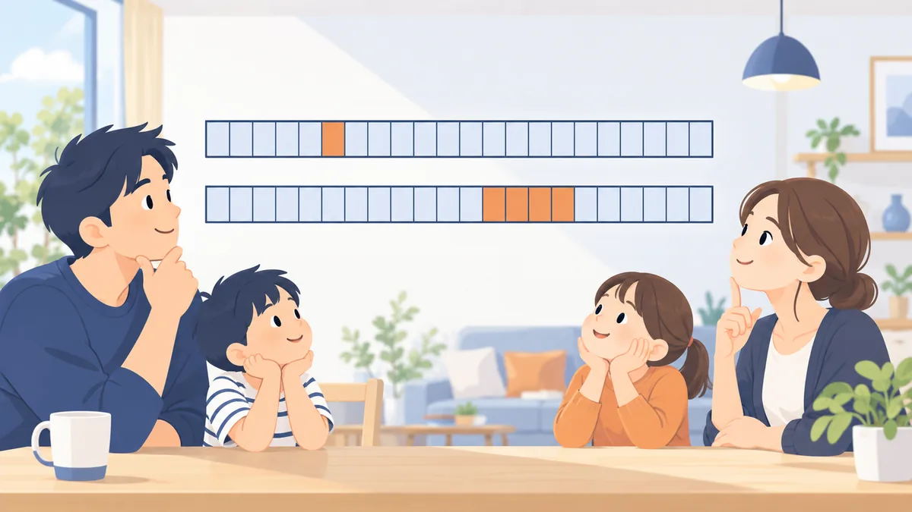

COLUMN
一度の短い遅れと、繰り返す遅れの違い。1 日の遅れは残るのか、何回までなら見られないのか

「残高不足で 1 日だけ引き落としが遅れた。住宅ローンに響くのか」というご相談を、よくいただきます。1 回の短い遅れと、繰り返す遅れでは、記録のされ方も見られ方も違います。この記事では、その違いと、お申込みの時期の考え方を整理します。今週の親記事 お支払いの記録に大きな遅れが残っている場合、住宅ローンはいつから検討できるか の関連記事です。
この記事について
- 記録の登録のしかたは会社によって異なります。ここでは一般的な傾向を整理します。
- 実際の判断は金融機関が行います。
1 日の遅れは記録に残るのか
入金状況の記録は、月ごとに「期日どおりに入金があったか」を登録する仕組みです。会社によって登録のタイミングが違い、期日の数日後に登録する会社では、1〜2 日の遅れなら「期日どおり」として登録されることがあります。一方、期日当日で登録する会社では、1 日でも遅れの印が付くことがあります。
つまり「1 日なら残らない」とは言い切れません。再引き落としで入金した場合も、会社によって扱いが違います。遅れたことに気づいたら、すぐに入金し、以後は繰り返さないことが最も確実な対応です。
1 回と複数回の見られ方の違い
| 直近 24 か月の遅れの印 | 一般的な見られ方 |
|---|---|
| 0 回 | 問題なし |
| 1 回（1 年以上前） | 多くの金融機関で大きな影響はない。理由を聞かれることがある |
| 1 回（直近 6 か月以内） | 金融機関によって分かれる。時期を少しずらすと見られ方が変わる |
| 2〜3 回（散発） | 慎重に見られる。金融機関の型によっては検討できる |
| 連続 2 か月以上、または 4 回以上 | 多くの金融機関で難しい。連続 3 か月に近づくと大きな遅れの記録になる |
回数だけでなく、「いつ」と「連続か散発か」が見られます。同じ 2 回でも、2 年前に 1 回と 1 年前に 1 回なら散発、先月と先々月なら連続で、後者のほうが慎重に見られます。
遅れが直近にある場合のお申込みの時期
- 直近 6 か月以内に遅れが 1 回: 可能なら 6 か月以上あけてから申込む。急ぐ場合は、理由（口座の残高不足など）を説明できるようにしておく
- 直近 12 か月以内に遅れが 2 回以上: 最後の遅れから 12 か月以上あける。その間、すべての支払いを期日どおりにする
- 24 か月の枠から遅れが外れる時期が近い: その時期まで待つと、記録上は遅れがない状態になる
「あと 3 か月待てば遅れの印が枠から外れる」という状況なら、待つ価値があります。逆に、外れるまで 20 か月あるなら、待つより金融機関の型を選ぶほうが現実的です。
遅れを出さない口座の整え方
- すべての引き落としを、給与の振込口座 1 つにまとめる
- 引き落とし日の一覧を作り、給与日との関係を確認する。給与日より前に引き落としが集中していれば、引き落とし日を変更する
- 口座に、1 か月分の引き落とし合計額を常に残しておく
- クレジットカードは、利用額の通知を受け取る設定にし、引き落とし額を事前に把握する
- 引き落としができなかった通知が来たら、その日のうちに入金する
まとめ
- 1 日の遅れは、会社によって残る場合と残らない場合がある。「残らない」前提にしない。
- 回数・時期・連続か散発かで見られ方が変わる。連続と直近が最も重い。
- 直近に遅れがあるなら、枠から外れる時期を計算して、待つか型を選ぶかを決める。
- 口座を 1 つにまとめ、1 か月分の残高を常に置く。